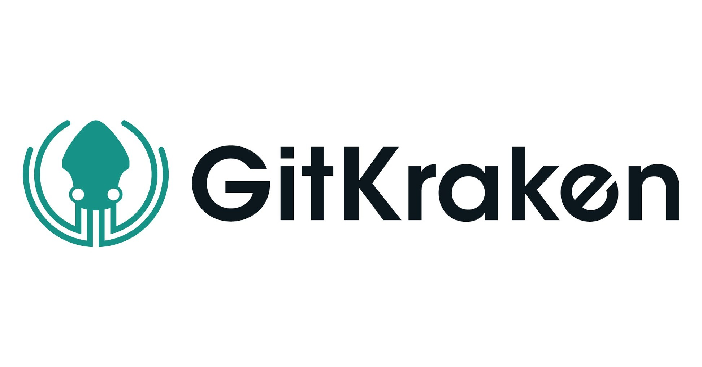
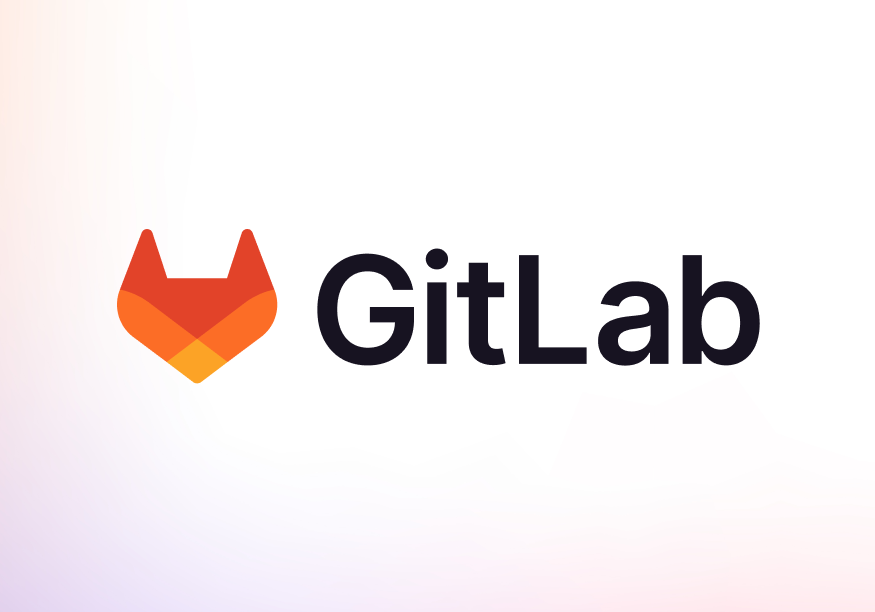
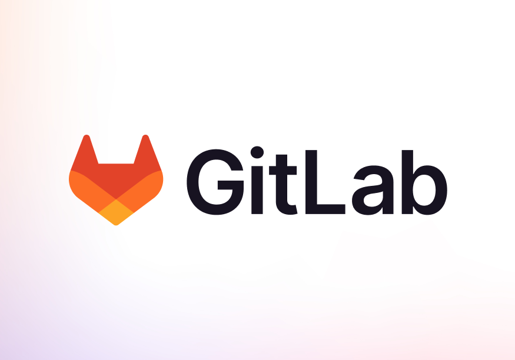

Disciplinas
-
Formação Profissional em Computação Concluído
Materiais
Professor ministrante: Marcelo Fantinato.
Conteúdo
Versionamento com Git - Visão Geral.
Objetivo:

Visão geral do Git
Git: sistema de controle de versões (VCSS)- Software livre
- Repositório de arquivos com controle de versões
- Eficiente, além de outras características
- Desenvolvido para Linux, mas possui versões para Windows
- Outros VCSS: CVS, SVN, Mercurial, BitKeeper, Bazzar, Monotone
Software com GUI para gerenciamento Git

GitKraken:
- Com recursos como visualização de gráficos de relacionamento de branches, integração com plataformas de hospedagem de código como GitHub e GitLab, e suporte multiplataforma, o GitKraken é popular entre desenvolvedores individuais e equipes.
GitAhead:
- Com recursos como busca avançada, filtros de visualização e suporte a repositórios grandes, o GitAhead é uma opção popular para desenvolvedores que preferem uma abordagem baseada em GUI para trabalhar com Git.
Gitg:
- Embora não seja tão rico em recursos quanto outras ferramentas GUI como GitKraken ou GitAhead, o Gitg é uma opção leve e simples para desenvolvedores que procuram uma maneira fácil de trabalhar com Git em sistemas Linux.
Websites para hospedagem em repositório Git na nuvem.
 

GitHub:
- Com sua grande comunidade de desenvolvedores, vasto ecossistema de projetos de código aberto e ferramentas de colaboração poderosas, o GitHub é uma escolha popular para indivíduos, equipes e empresas que desejam hospedar, colaborar e contribuir para projetos de software.
GitLab:
- Com recursos como repositórios Git privados e públicos, pipelines de CI/CD integrados, gerenciamento de permissões avançado e um sistema de monitoramento de problemas robusto, o GitLab é uma opção popular para organizações que desejam uma solução completa para o desenvolvimento de software.
SourceForge:
- Embora tenha sido uma escolha popular no passado, o SourceForge perdeu parte de sua popularidade para plataformas mais modernas como GitHub e GitLab. No entanto, ainda é usado por muitos projetos de código aberto para hospedar e distribuir seu software.